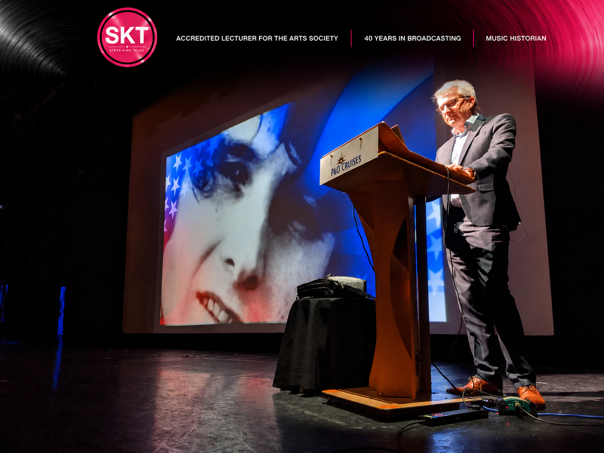
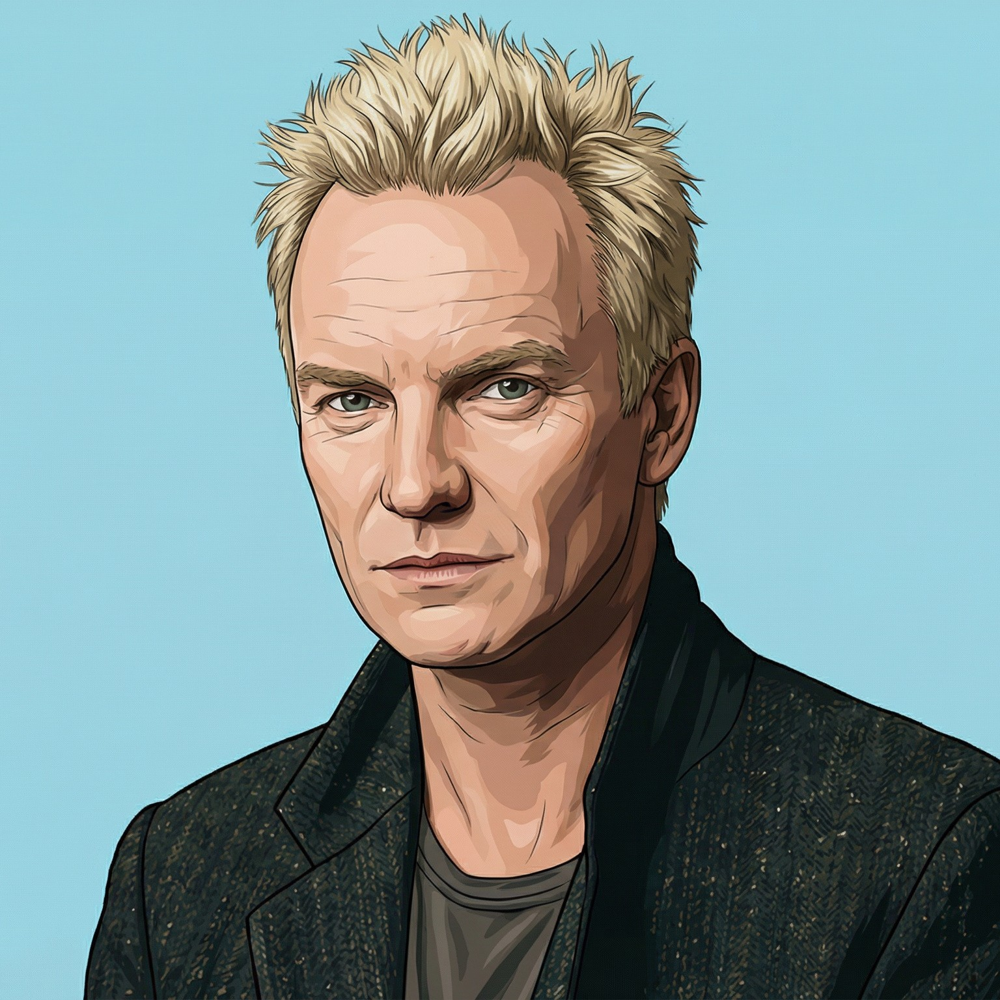
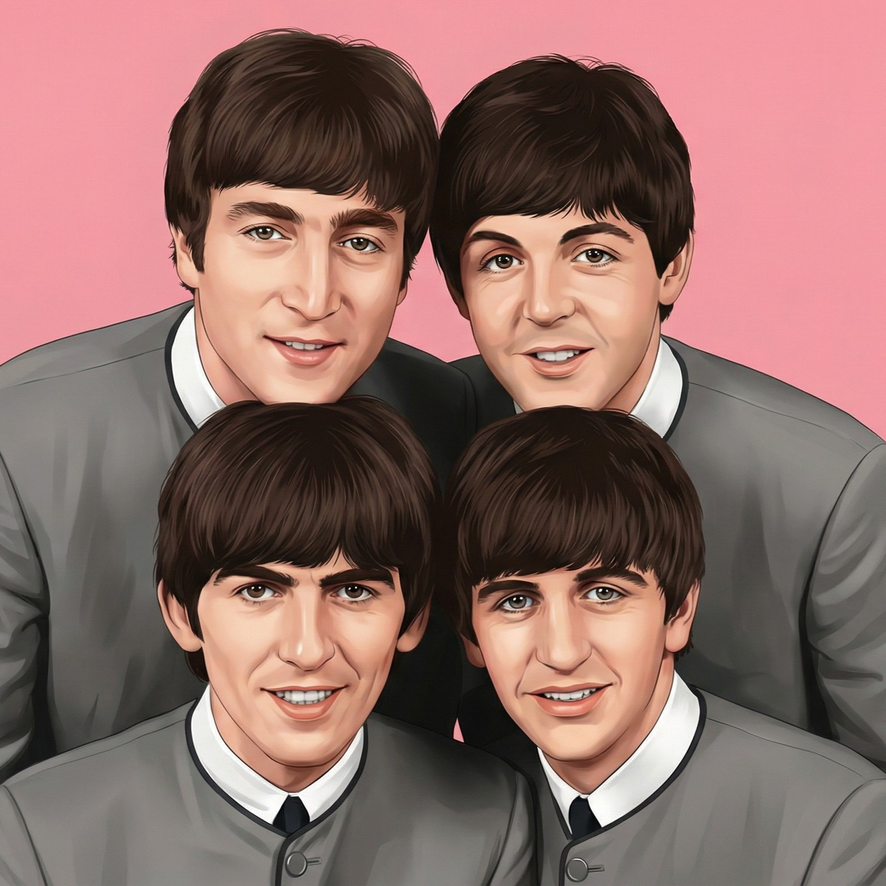
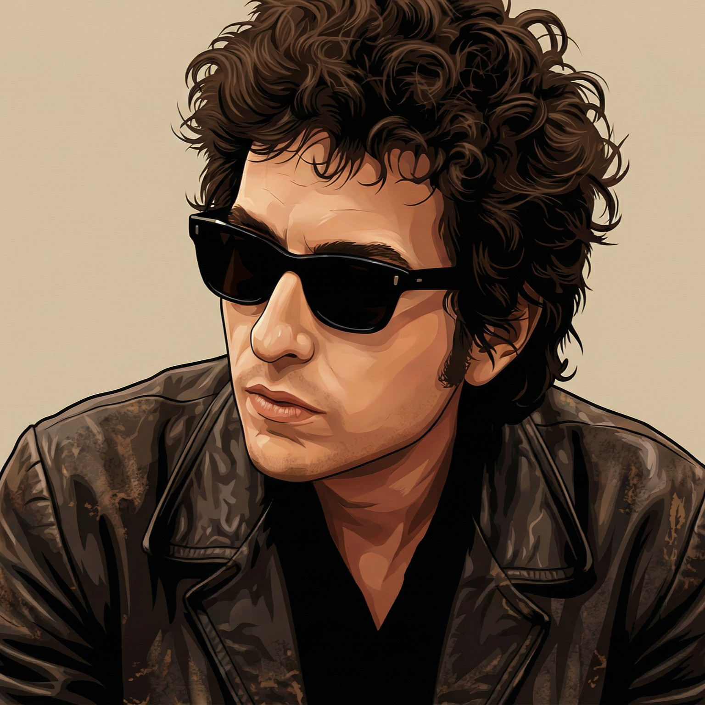
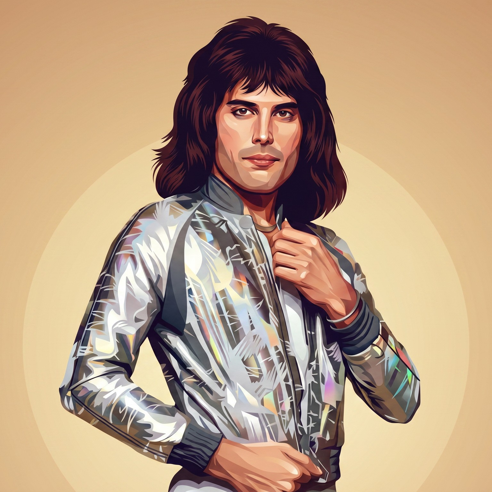
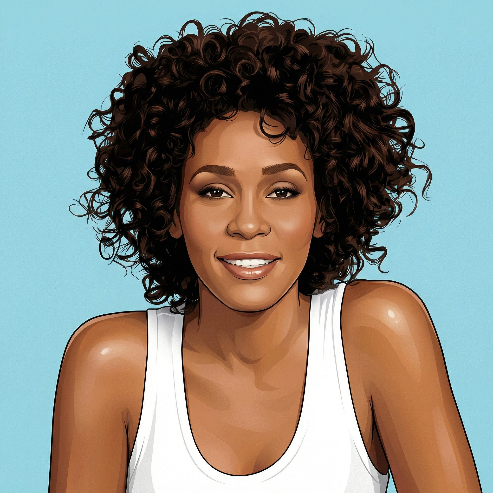
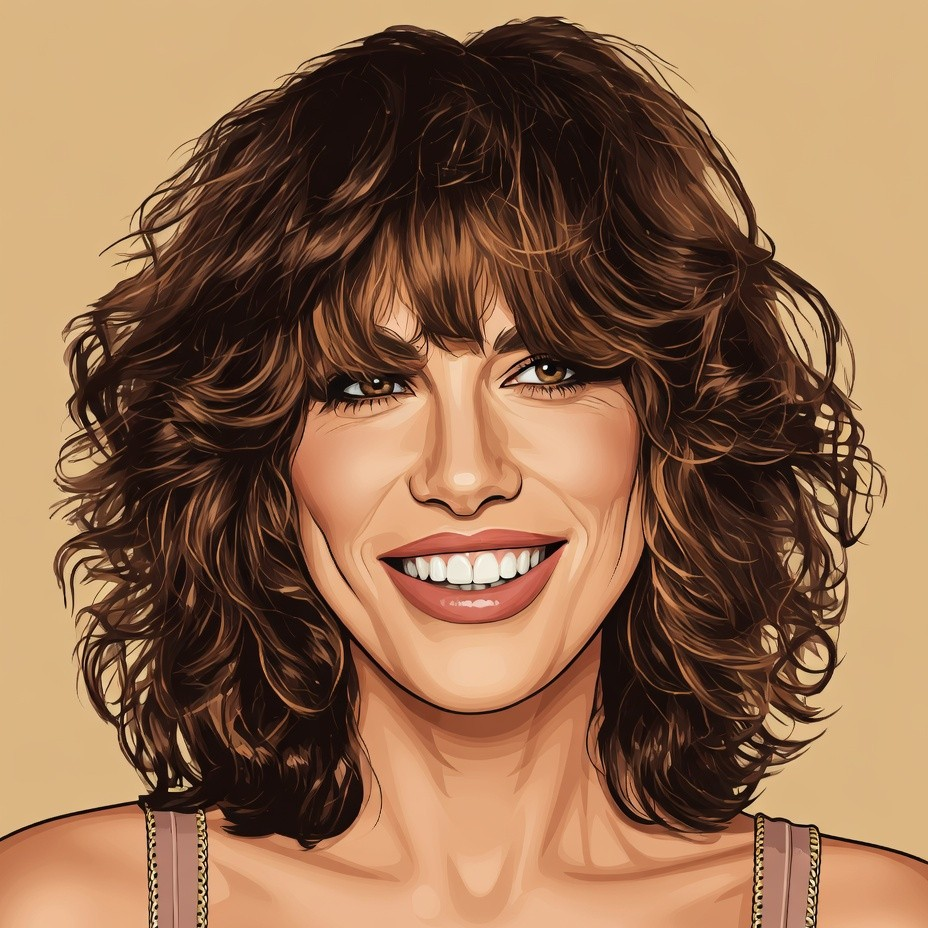
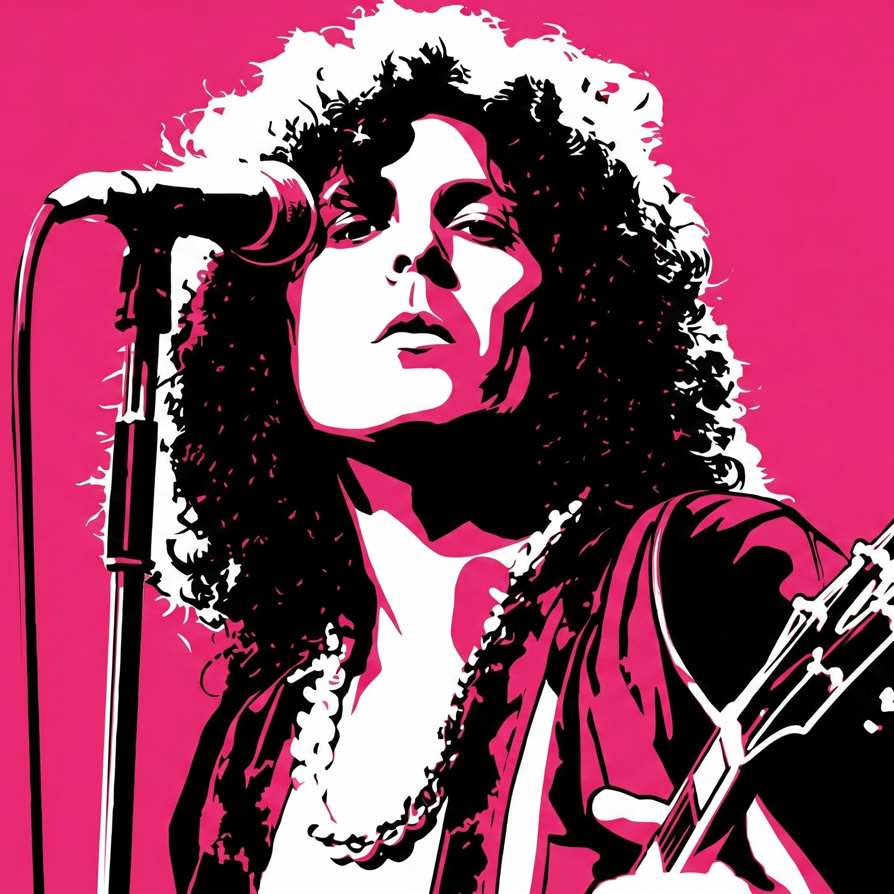
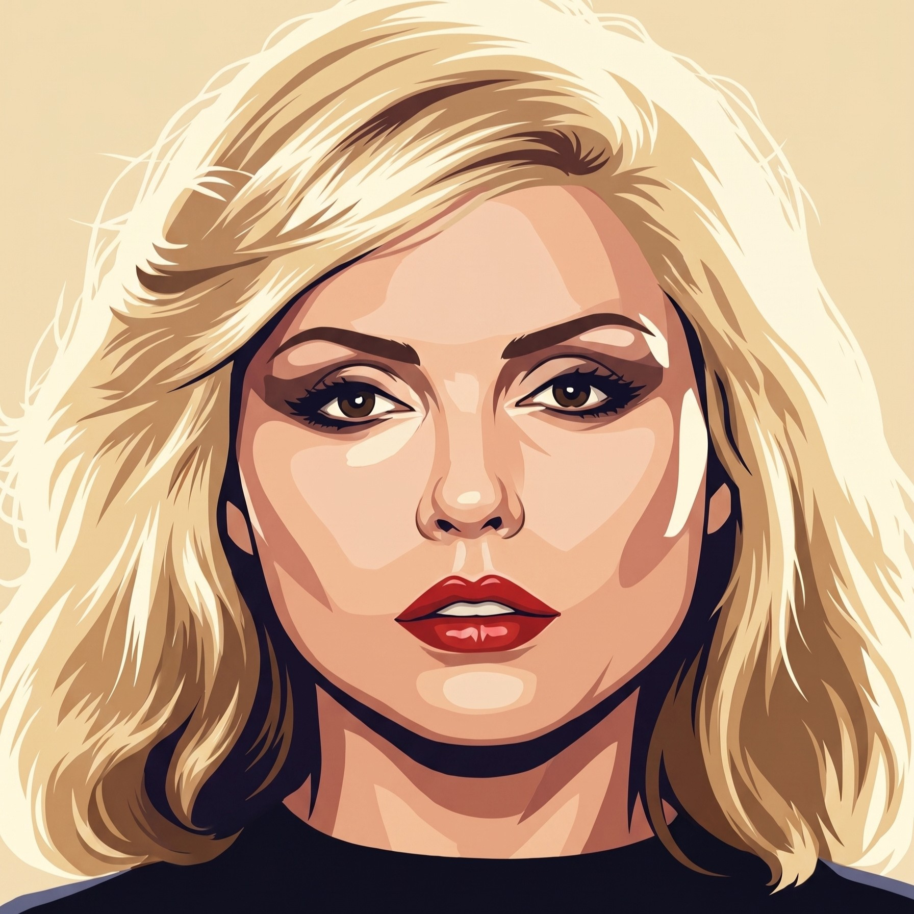

Steve King — 40 years in commercial radio, accredited lecturer for The Arts Society, music historian. Ten lectures across six decades of popular music, available live and online.

"Steve has a very easy and engaging manner which belies the highly professional way in which he approaches his subject —lavish in both substance and style. Many of our members have asked for a return visit."








Steve has spent 40 years working in the radio industry. He is a popular Music Historian, Broadcaster, Programmer and Events Director. He has managed some of the biggest radio brands in the UK and has worked with many well known popular music artists.
His love of popular music and his work as a radio presenter and Events Director has enabled him to meet and work with artists including Olly Murs, Robbie Williams, U2, Ed Sheeran and Rita Ora. Steve has directed over 50 multi-artist events at venues including the Royal Albert Hall, London Palladium and Wembley Arena.
Steve has lectured at various media conferences and industry events during his career and more recently on cruise ships for Cunard, Fred Olsen, Saga, P&O and Marella.